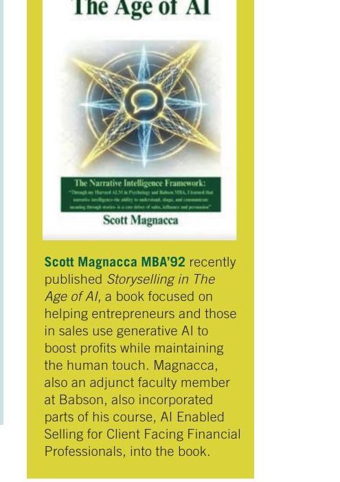

Featured in Babson Magazine — Spring 2026
"Storyselling in the Age of AI is focused on helping entrepreneurs and those in sales use generative AI to boost profits while maintaining the human touch. Magnacca, also an adjunct faculty member at Babson, also incorporated parts of his course, AI Enabled Selling for Client Facing Financial Professionals, into the book."
Babson College Faculty
MBA '92
